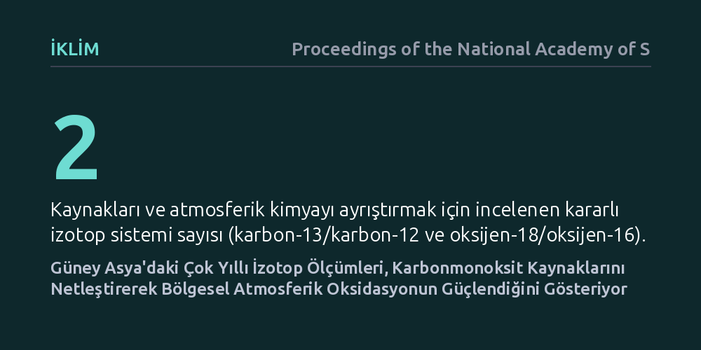

IKLIM · Proceedings of the National Academy of Sciences · 2026-10-23
Araştırmacılar, Güney Asya'daki gözlem istasyonlarında çok yıllı karbon ve oksijen izotoplarını inceleyerek karbonmonoksitin kaynaklarını ve atmosferdeki kimyasal akıbetini belirledi. Ölçümler, bölgedeki karbonmonoksit salımlarının kökenini ayrıştırırken atmosferik temizleme mekanizması olan oksidasyon sürecinin belirgin biçimde hızlandığını gösterdi.
Karbonmonoksitin atmosferden ne hızla temizlendiğinin anlaşılması, metan gibi güçlü sera gazlarının ömrünü ve Güney Asya kaynaklı iklim modellerinin güvenilirliğini doğrudan etkiler.

Karbonmonoksit (CO), doğrudan güçlü bir sera gazı olmasa da atmosfer kimyasında hayati bir denge unsurudur. Atmosferin 'doğal deterjanı' olarak bilinen ve başta metan olmak üzere birçok iklim kirleticisini parçalayan hidroksil (OH) radikalleriyle hızla tepkimeye girer. Bu nedenle havadaki karbonmonoksit miktarının artması, hidroksil radikallerini tüketerek metanın atmosferde çok daha uzun süre kalmasına ve küresel ısınmanın şiddetlenmesine yol açar.
Özellikle Güney Asya, hem yoğun nüfusu hem de yüksek biyokütle ve fosil yakıt tüketimi nedeniyle devasa kirletici bulutlarının ('kahverengi bulutlar') oluştuğu kritik bir coğrafyadır. Ancak geleneksel emisyon envanterleri ve uydu gözlemleri, bu kirliliğin tam olarak ne kadarının tarımsal artık ve odun yakımından (biyokütle), ne kadarının ise taşıt ve sanayiden (fosil yakıtlar) geldiğini net bir şekilde ayrıştırmakta yetersiz kalmaktadır.
Bilim insanları bu belirsizliği aşmak için doğrudan kimyasal yoğunlukları ölçmek yerine, karbonmonoksit moleküllerinin atomik ağırlıklarını, yani kararlı izotop oranlarını inceleme yoluna gitti. Karbonmonoksit içerisindeki karbon-13/karbon-12 ve oksijen-18/oksijen-16 oranları, gazın ortaya çıktığı kaynağa göre belirgin bir kimyasal parmak izi taşır; örneğin orman veya anız yangınlarından çıkan gaz ile motorlu taşıt egzozundan çıkan gazın izotopik bileşimi birbirinden farklıdır.
Bu çalışmada, Güney Asya'daki stratejik alıcı (reseptör) istasyonlarında çok yıllı sistematik hava örneklemeleri toplandı. Toplanan örneklerdeki karbonmonoksit, yüksek hassasiyetli izotop oranı kütle spektrometrisi teknikleriyle analiz edilerek hem mevsimsel kaynak değişimleri hem de gazın atmosferde taşınırken geçirdiği kimyasal değişimler takip edildi.
Elde edilen çok yıllı ikili izotop verileri, Güney Asya üzerindeki karbonmonoksit kirliliğinin kaynak dağılımını net bir biçimde sınırladı. Analizler, kış aylarında biyokütle yakımının baskın olduğunu, yılın geri kalanında ise fosil yakıt emisyonlarının ve hidrokarbonların atmosferik oksidasyonundan kaynaklanan ikincil üretimin önemli bir paya sahip olduğunu ortaya koydu.
Daha da önemlisi, oksijen izotoplarındaki değişimler bölgedeki atmosferik oksidasyon sürecinin beklenenden çok daha kuvvetli olduğunu gösterdi. Karbonmonoksitin hidroksil radikalleriyle tepkimeye girme hızı, mevcut kimyasal taşınım modellerinin öngördüğü seviyelerin üzerinde gerçekleşiyor; bu da bölge atmosferinin kirleticileri temizleme kapasitesinin yerel olarak hızlandığına işaret ediyor.
Bu bulgular, iklim değişikliği ve hava kalitesi modellemelerinde kullanılan emisyon envanterlerinin gözden geçirilmesi gerektiğini gösteriyor. Atmosferik temizleme mekanizmasının yerel ölçekte daha etkin çalışması, kirleticilerin havada kalış sürelerini ve taşınım mesafelerini doğrudan etkilediğinden, küresel iklim modellerindeki parametrelerin güncellenmesini zorunlu kılıyor.
Ayrıca politika yapıcılar açısından, hava kirliliğiyle mücadelede genel yasaklar yerine mevsimsel olarak değişen spesifik kaynaklara odaklanmanın gerekliliği kanıtlanmış oluyor. Biyokütle yakımının yoğunlaştığı dönemler ile sanayi ve ulaşım kaynaklı emisyonların baskın olduğu dönemlerin ayrıştırılması, hedefe yönelik ve maliyet etkin emisyon azaltım stratejilerinin geliştirilmesine zemin hazırlıyor.